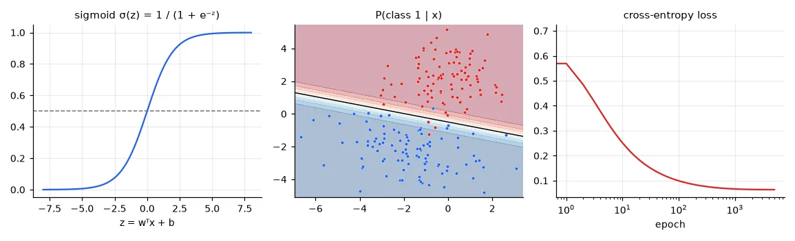
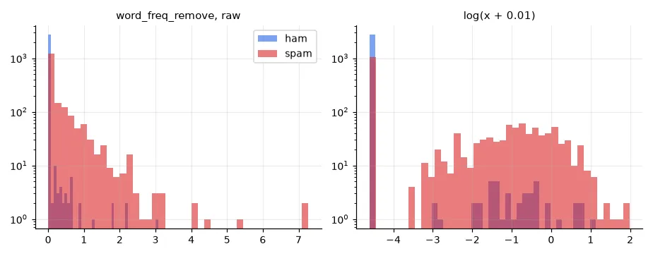
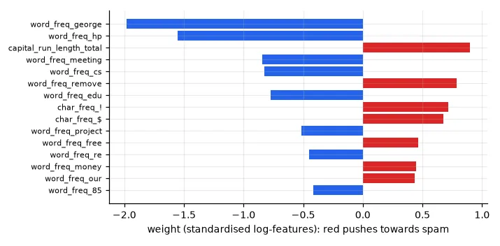
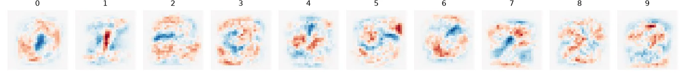

From a score to a probability#
For classification we want \(P(y = 1 \mid \mathbf{x})\), a number between 0 and 1. Logistic regression computes a linear score \(z = \mathbf{w}^\top\mathbf{x} + b\), exactly as in lesson 02, and squashes it with the sigmoid:
The decision rule "predict 1 if \(P > 0.5\)" is the same as "\(z > 0\)": the decision boundary is the hyperplane \(\mathbf{w}^\top\mathbf{x} + b = 0\). Logistic regression is a linear classifier; the sigmoid only turns distances to the boundary into confidences.
Another way to read it: \(z = \log\frac{P}{1-P}\), the log-odds. Each weight \(w_j\) says how much the log-odds change when \(x_j\) grows by one unit — that will make the spam filter readable.
The loss: cross-entropy#
Squared error is a bad fit for probabilities (with a sigmoid it is not convex, and it barely punishes confident mistakes). Take the same road as lesson 02 — maximum likelihood. Each label is a coin flip with probability \(p_i = \sigma(z_i)\), so the likelihood of the data is \(\prod_i p_i^{y_i}(1-p_i)^{1-y_i}\). Its negative logarithm, averaged, is the binary cross-entropy:
A confident wrong answer (\(p_i \to 0\) while \(y_i = 1\)) costs \(-\log p_i \to \infty\). And the gradient is strikingly simple — thanks to \(\sigma'(z) = \sigma(z)(1-\sigma(z))\), everything cancels to
"error times input", the same form as linear regression. \(J\) is convex: gradient descent finds the global minimum.
def two_gaussians(n_per_class):
"""The lab's synthetic data: two 2-D Gaussian clouds with different covariances."""
mu1, S1 = np.array([0, 2]), 1.5 * np.array([[1, 0.1], [0.1, 1]])
mu2, S2 = np.array([-2, -2]), 3.5 * np.array([[1, -0.25], [-0.25, 0.5]])
X = np.vstack([np.random.multivariate_normal(mu1, S1, n_per_class),
np.random.multivariate_normal(mu2, S2, n_per_class)])
y = np.r_[np.ones(n_per_class), np.zeros(n_per_class)].astype(int)
return X, y
X, y = two_gaussians(100) # X (200, 2), y (200,) in {0, 1}
def sigmoid(z):
return 1 / (1 + np.exp(-z))
def fit_logistic(X, y, lr=0.1, epochs=5000):
"""Minimise the mean cross-entropy by gradient descent. Returns w (d,), b and the loss history."""
w, b = np.zeros(X.shape[1]), 0.0
losses = []
for _ in range(epochs):
p = sigmoid(X @ w + b) # (n,) predicted P(y = 1 | x)
eps = 1e-12
losses.append(-np.mean(y * np.log(p + eps) + (1 - y) * np.log(1 - p + eps)))
w -= lr * X.T @ (p - y) / len(y) # the gradient is (prediction - label) * input
b -= lr * np.mean(p - y)
return w, b, np.array(losses)
w, b, losses = fit_logistic(X, y)
ref = LogisticRegression(C=np.inf).fit(X, y) # C = inf: no regularisation, like ours
print("from scratch: w = %s, b = %.4f, loss %.4f" % (np.round(w, 4), b, losses[-1]))
print("scikit-learn: w = %s, b = %.4f" % (np.round(ref.coef_[0], 4), ref.intercept_[0]))
print("training accuracy %.3f" % np.mean((sigmoid(X @ w + b) > 0.5) == y))
from scratch: w = [0.8451 3.2715], b = 1.6196, loss 0.0641
scikit-learn: w = [0.8631 3.3297], b = 1.6758
training accuracy 0.980
Our weights are close to scikit-learn's but not identical: the two clouds barely overlap, so the loss keeps decreasing very slowly as the weights grow (on perfectly separable data the unregularised optimum is at infinity!). scikit-learn's L-BFGS solver, a quasi-Newton method (lesson 03), gets further than 5,000 plain gradient steps. In practice a small L2 penalty — scikit-learn's default, \(C=1\) — keeps the weights finite.

A spam filter#
The Spambase dataset: 4,601 e-mails from Hewlett-Packard in the late 90s, each described by 57 numbers — the frequency (%) of 48 words (free, remove, george…), of 6 characters (!, $…), and three statistics of runs of capital letters.
BASE = "https://archive.ics.uci.edu/ml/machine-learning-databases/spambase/"
data = np.loadtxt(U.fetch(BASE + "spambase.data", "spambase.data"), delimiter=",")
names = [line.split(":")[0] for line in U.fetch(BASE + "spambase.names", "spambase.names").read_text()
.splitlines() if line.endswith("continuous.")] # the 57 feature names
Xs, ys = data[:, :57], data[:, 57].astype(int) # (4601, 57) word/char frequencies + capital-run lengths
print("%d e-mails: %d ham, %d spam; feature max values from %.2f to %.0f"
% (len(ys), (ys == 0).sum(), ys.sum(), Xs.max(0).min(), Xs.max(0).max()))
Xa, Xt, ya, yt = train_test_split(Xs, ys, test_size=1 / 3, stratify=ys, random_state=0)
4601 e-mails: 2788 ham, 1813 spam; feature max values from 2.17 to 15841
def evaluate(name, train, test, C=1.0):
clf = LogisticRegression(C=C, max_iter=5000).fit(train, ya)
print(f"{name:13s} train acc {clf.score(train, ya):.4f} test acc {clf.score(test, yt):.4f}")
return clf
evaluate("raw", Xa, Xt)
sc = StandardScaler().fit(Xa)
clf_std = evaluate("standardised", sc.transform(Xa), sc.transform(Xt))
eps = 0.01
sc_log = StandardScaler().fit(np.log(Xa + eps))
clf_log = evaluate("log + std", sc_log.transform(np.log(Xa + eps)), sc_log.transform(np.log(Xt + eps)))
raw train acc 0.9309 test acc 0.9302
standardised train acc 0.9289 test acc 0.9257
log + std train acc 0.9416 test acc 0.9433
The log transform is the big win. Word frequencies are heavy-tailed: most e-mails have 0, a few have a lot. On a linear scale the model can only say "more remove = more spam" proportionally, and a handful of extreme e-mails dominate the fit. After \(\log(x + 0.01)\) the feature separates absent (a spike at \(\log 0.01\)) from present and compresses the tail, so "the word appears at all" — which is what matters — becomes easy to express.

Reading the weights#
coef = clf_log.coef_[0] # one weight per standardised log-feature
order = np.argsort(-np.abs(coef))
for i in order[:10]:
print(f"{names[i]:28s} {coef[i]:+.2f} (odds x{np.exp(coef[i]):.2f} per std)")
word_freq_george -1.98 (odds x0.14 per std)
word_freq_hp -1.55 (odds x0.21 per std)
capital_run_length_total +0.90 (odds x2.46 per std)
word_freq_meeting -0.84 (odds x0.43 per std)
word_freq_cs -0.83 (odds x0.44 per std)
word_freq_remove +0.79 (odds x2.20 per std)
...
The strongest ham signals are george and hp: the ham e-mails were donated by George Forman's colleagues at HP. A filter trained on this data would be useless for anyone else — the model learnt the dataset's quirks, a lesson about where the data comes from that no test accuracy will reveal. The spam side is what you'd expect: lots of capitals, remove ("to be removed from this list…"), ! and $.

Compare weights only on a common scale
In my lab report I ranked features by the raw coefficients of the model trained on unscaled data. A weight is "change in log-odds per unit of the feature" — and units differ: one more percent of george is enormous, one more character in the total capital run length is nothing. Only after standardisation are weights "per standard deviation" and comparable. Even then, correlated features share their weight, so a small weight does not prove a feature is useless.
Ten classes: the softmax#
For \(K\) classes, give each class its own score \(z_k = \mathbf{w}_k^\top\mathbf{x} + b_k\) and turn the scores into probabilities with the softmax:
All positive, summing to 1, and the largest score gets the largest probability. The loss is again the negative log-probability of the true class (categorical cross-entropy), and the gradient again "probability minus one-hot label, times input". This multinomial logistic regression is literally the last layer of every classification network: a CNN (lesson 13) is a learned feature extractor followed by softmax regression.
x_train, y_train, x_test, y_test = U.load_mnist()
n_train = 10000 # a subset keeps this under a minute on a CPU
Xm = x_train[:n_train].reshape(n_train, -1) / 255.0 # (10000, 784) float64 in [0, 1]
Xm_test = x_test.reshape(len(x_test), -1) / 255.0
t0 = time.time()
soft = LogisticRegression(C=0.05, max_iter=300).fit(Xm, y_train[:n_train]) # multinomial (softmax)
print("softmax regression on %d MNIST digits: train acc %.4f, test acc %.4f (%.0f s)"
% (n_train, soft.score(Xm, y_train[:n_train]), soft.score(Xm_test, y_test), time.time() - t0))
print("weights:", soft.coef_.shape) # (10 classes, 784 pixels)
softmax regression on 10000 MNIST digits: train acc 0.9355, test acc 0.9104 (8 s)
weights: (10, 784)

Since the score is a dot product between the image and \(\mathbf{w}_k\), each class weight vector is an image — a template the digit is matched against. 91% with templates is respectable, but one template per class cannot cope with all the ways of writing a 7. Neural networks will learn many intermediate templates (features) and combine them; that takes us from 91% to 99% in lesson 13.
Exercises#
- Change the decision threshold from 0.5 to 0.9 on the spam filter. How many spams get through, and how many legitimate e-mails are blocked? Which threshold would you choose for a real mailbox? (Lesson 06 formalises this with precision and recall.)
- Implement the softmax regression from scratch with NumPy (one weight matrix
Wof shape(784, 10)) and train it with mini-batch gradient descent. Subtractz.max(axis=1, keepdims=True)before the exponential — why? - Train the spam model without
georgeandhp. How much accuracy is lost?